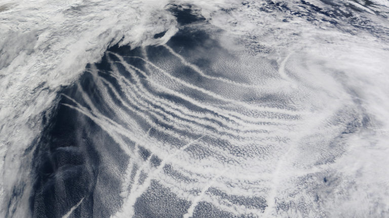

Neither Raw Nor Cooked
by La Cocina

Visible ship tracks in the Nothern Pacific, on March 4th, 2009Como las brasas que arden / mientras Ariel y Calibán / sostienen la soledad del muro oeste. / Acuclillados uno frente al otro. / Como quien busca su rostro en el corazón de la cebolla. / Hurgando, hurgando / pese al frío y los gases: / Un abrigo de fantasía.
Like embers that burn / while Ariel and Caliban / hold up the solitude of the western wall. / Crouched down, one in front of the other. / Like someone looking for his face / in the heart of an onion. / Poking, poking / despite the cold and fumes: / a blanket of fantasy.
These verses come from a poem entitled “Ni Crudo ni cocido'' written by Roberto Bolaño in the 1980s. Inspired by The Tempest – perhaps the last play written by Shakespeare as a single writer–, it is used by Bolaño to summon his everlasting disenchantment for a Latinamerica consumed by its own paradoxes. There have been at least two seemingly unrelated events that made these lines possible. On the one hand, Salvador Ayende had to rise to power only to be overthrown by a military coup in 1973: an event that would greatly shape the universe in which the poet nurtured his imagination. On the other hand, the figure of the cannibal had to have settled in the collective imagination. Ambiguous figure oscillating between an emancipated slave and an uncivilized glutton: Caliban the cannibal “holding up the solitude of the western wall”. The cannibal – and all its metaphorical palate – is perhaps an inevitable companion when we venture into a discussion about consumption. Neither fixed nor single, they gladly exist in the fringes between culture and nature – devouring, revoking arbitrary divisions, one bite at a time. Such a character helps us acknowledge that life entails above all a sort of relentless-cannibalia in which humans and non-humans are inextricably involved. The title chosen by the poet, ‘Half-Cooked’ – neither raw nor cooked –, suggests a liminal state: half-done we remain, always in transit, insatiable. As if Ayende’s aborted project and the Haitian revolution had become ingredients fermented by time, fetched across the oceans, flavored in someone’s mind, preserved in data servers: which we consume today by chance. Note- Roberto Bolaño, Los perros románticos, ‘Ni Crudo, Ni Cocino’ (Kutxa Fundazioa, 1994). Translated into English by Laura Healy, The Romantic Dogs (New York: New Directions, 2008).